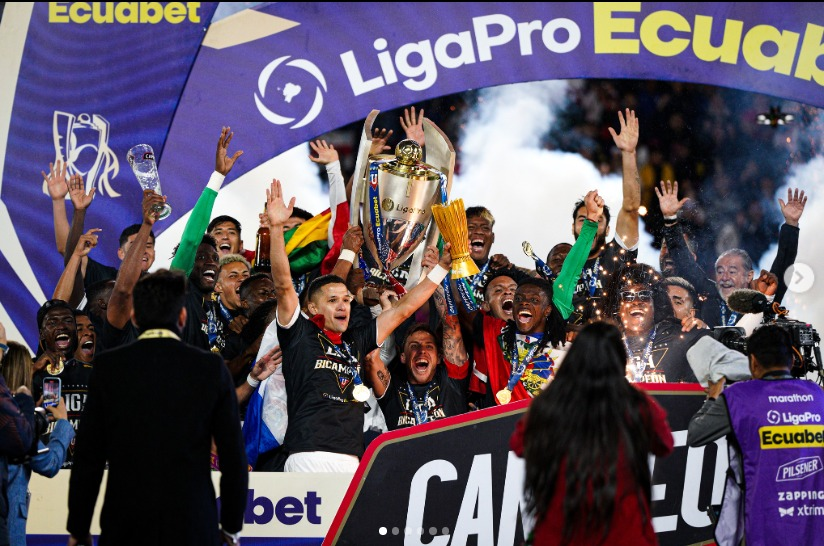
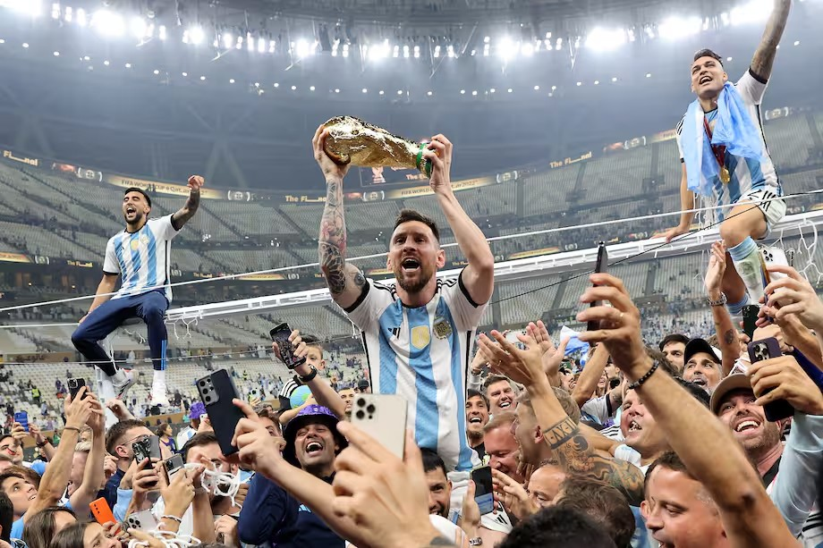
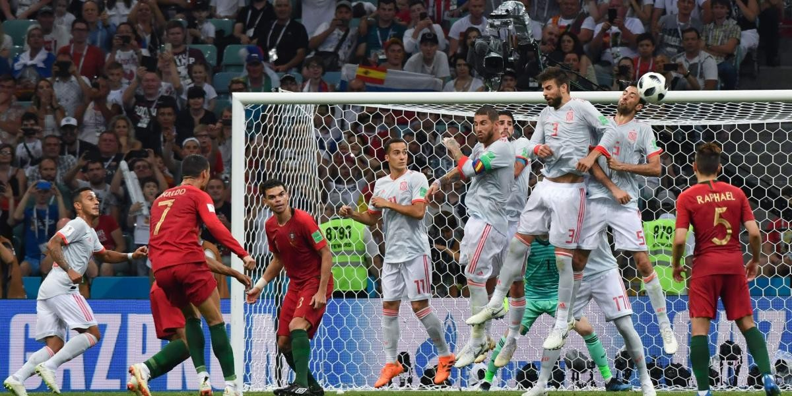

El Once Ideal Página Oficial
Estadísticas del Fútbol
La revista de fútbol más candente del Ecuador

Accede a las Estadísticas
Lo mejor del momento
Información de Alta importancia para el campo Futbolero

Balones de ORO
Jugadores Exitosos
La rivalidad de Lionel Messi y Cristiano Ronaldo por saber quién es el mejor jugador del mundo
